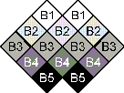

Quilts: Not Just For Beds
P.O.Box 1342 * Bellevue,WA 98009 * jlk@eskimo.com

The most frequently asked question I get is "How do you choose your fabrics?"
I am very lucky to have at least six quilt shops within a one hour driving distance from my house. I go to all of the fabric shops and buy whatever colors I need. I start by picking a fabric that I really like. Then I look for other fabrics in the same color family, making sure that they are all different values. I buy AT LEAST five of each color family. Then I go home and make sure all of the fabrics work together. I also make sure that there are no two fabrics in the same color family that are the same value. Sometimes I will find I have holes that need to be filled, then I do go back and look for just the right fabric.
Then I go home and make sure all of the fabrics work together. I check again (this is very important) to make sure that there are no two fabrics in the same color family that are the same value. Sometimes I will find I have holes that need to be filled, then I do go back and look for just the right fabric. When you have decided on your five fabrics in a color family, using 1 1/2 inch squares, arrange in the following order to make sure they will work in a pleasing manner. I have used the five blues designated as B1, B2, B3, B4 and B5, with B1 being the lightest and B5 being the darkest, as an example.

I have included the following fabric swatches in greens and blues to give you an idea of what fabrics I use. Most of these fabrics are old enough to be no longer available, they should be used as a general guide only.
<
 Quilt Patterns
Quilt Patterns BlockMinder
BlockMinder Mystery Quilt #3
Mystery Quilt #3 Ordering Information
Ordering Information Customer Response
Customer Response